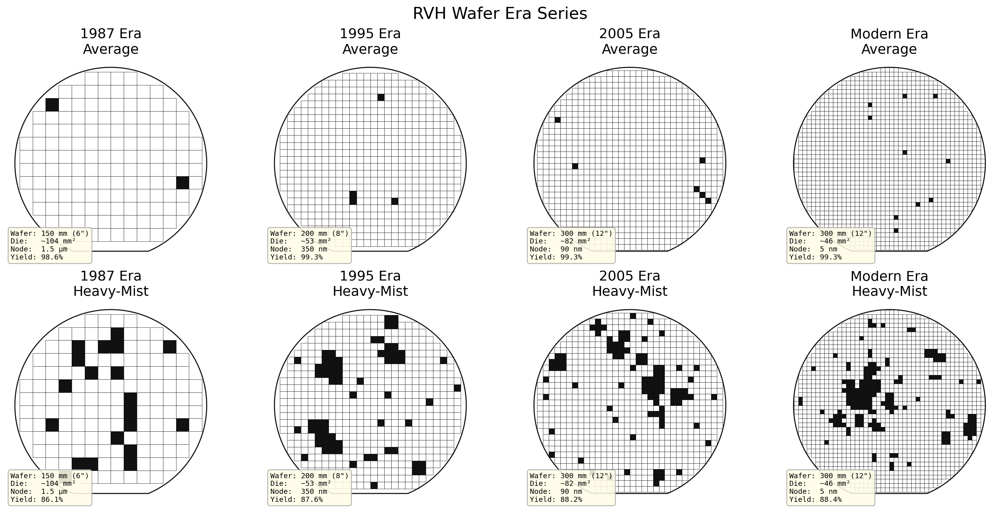
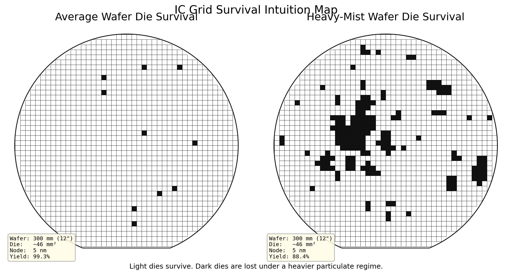
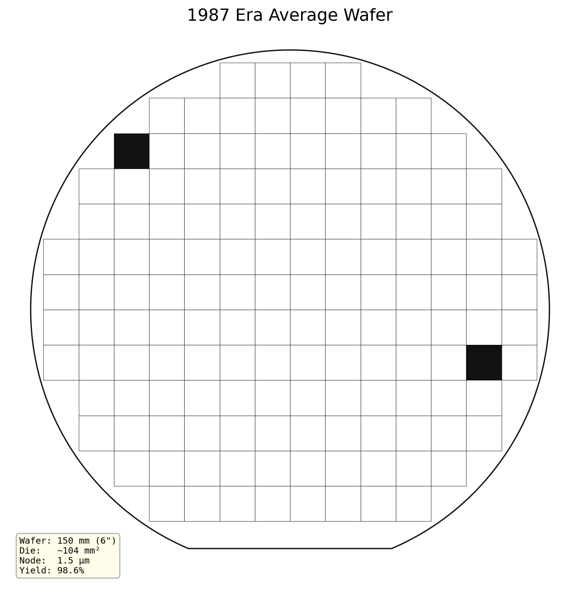
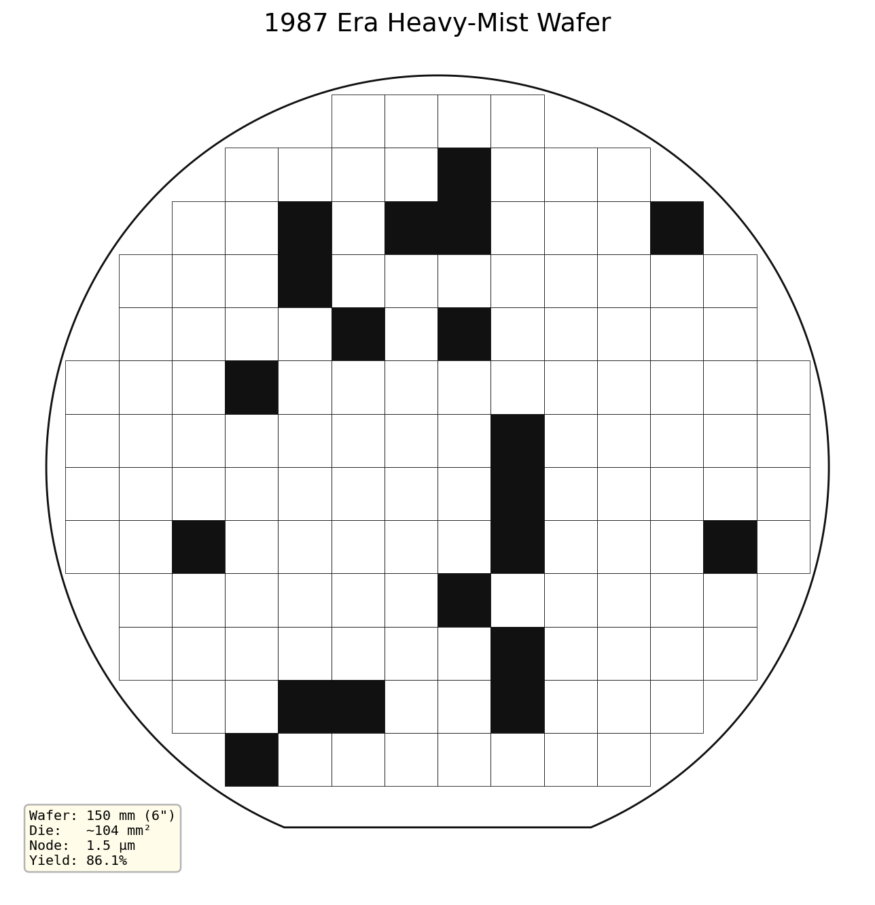
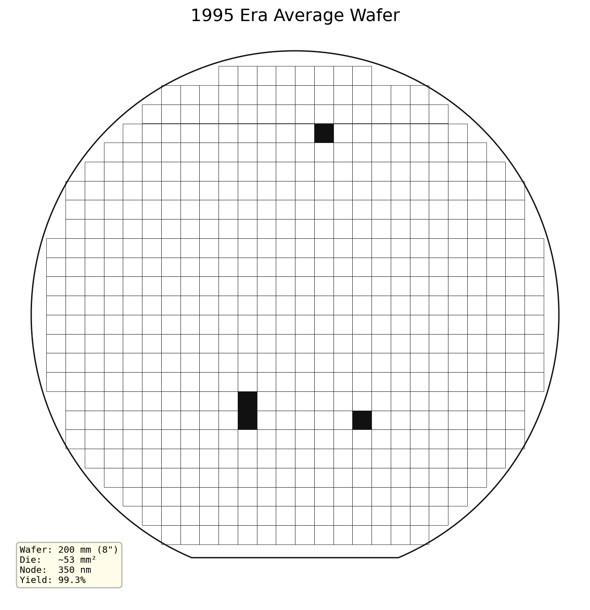
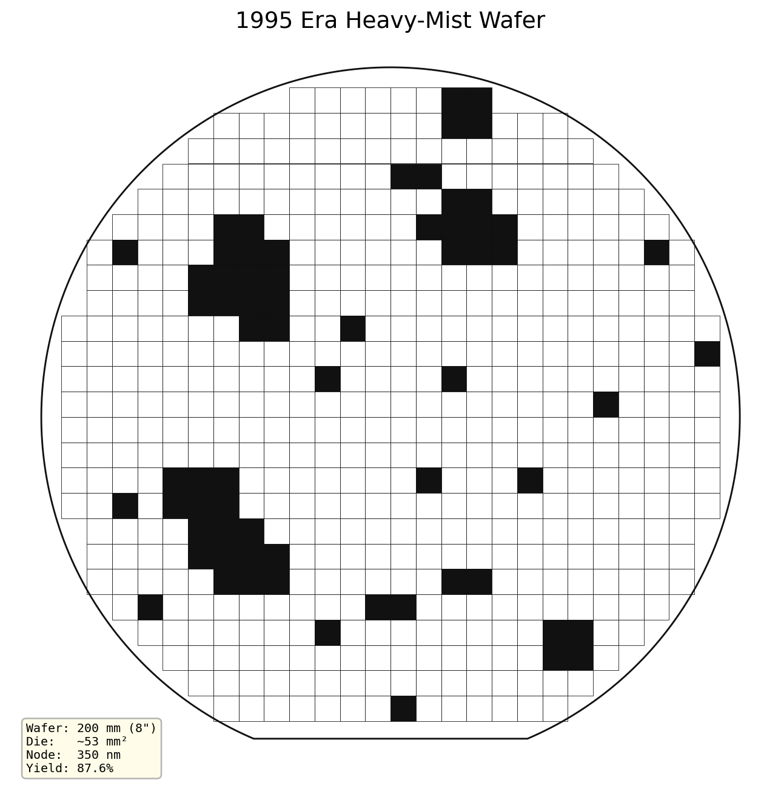
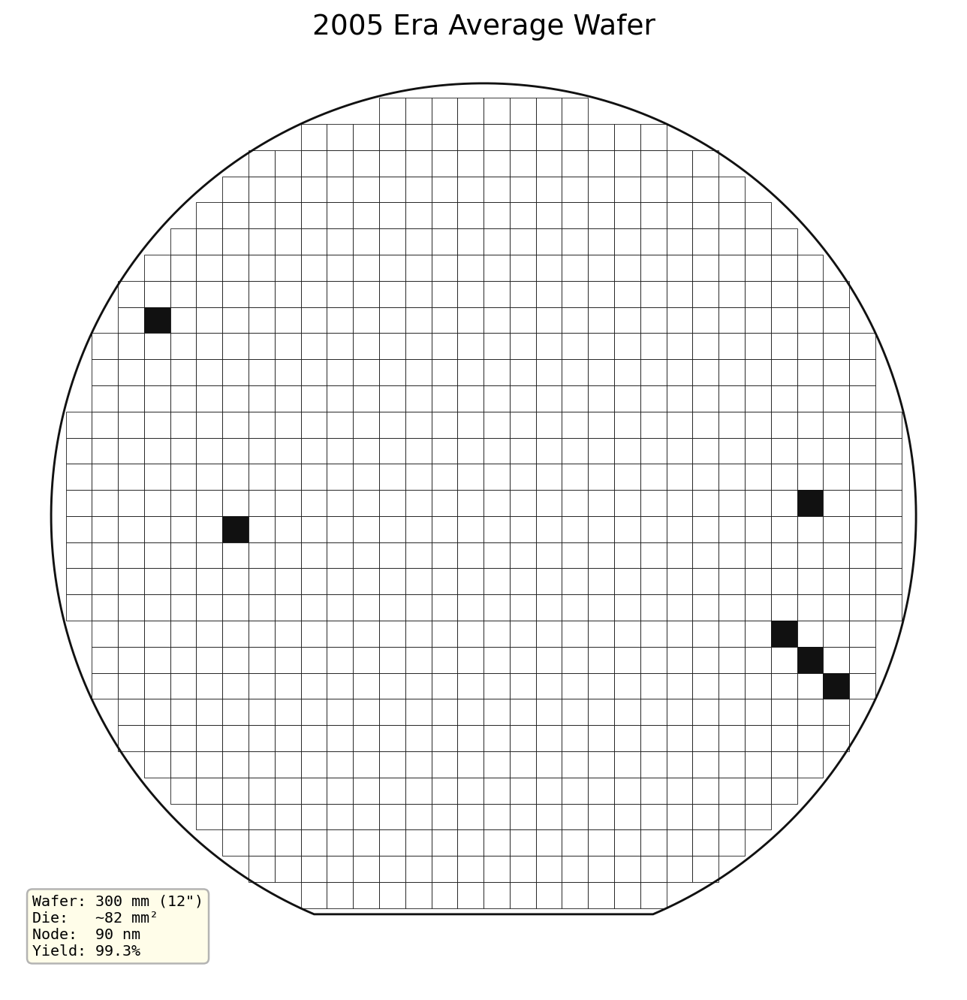
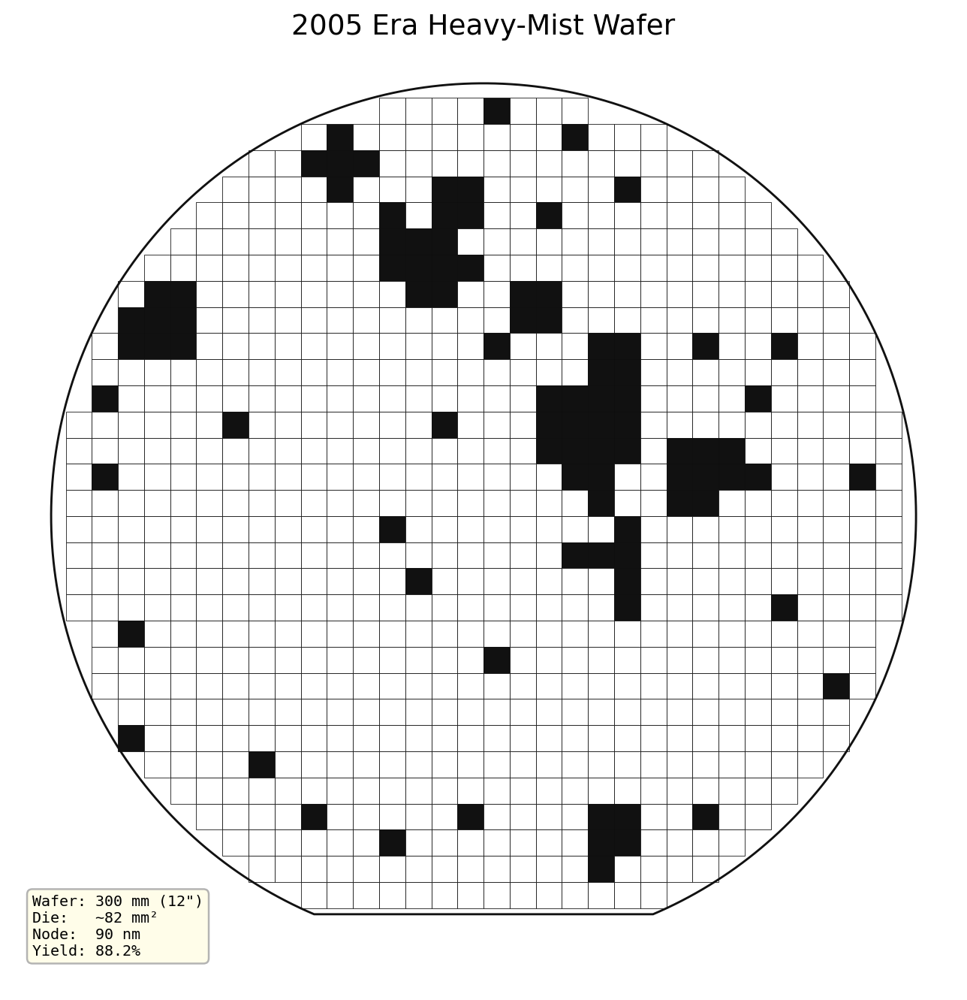
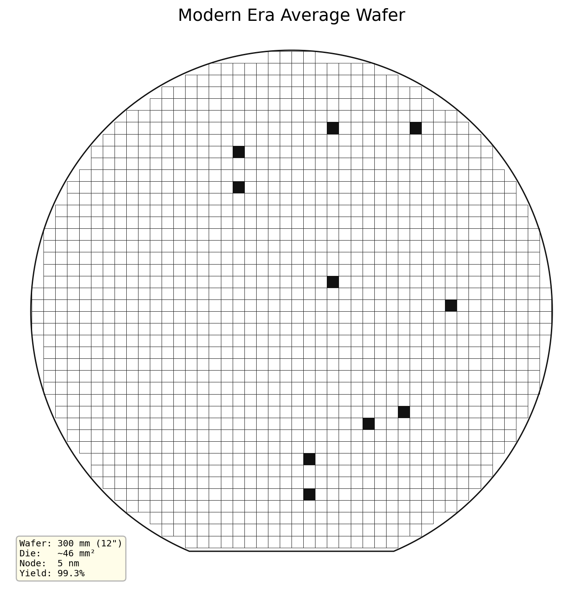
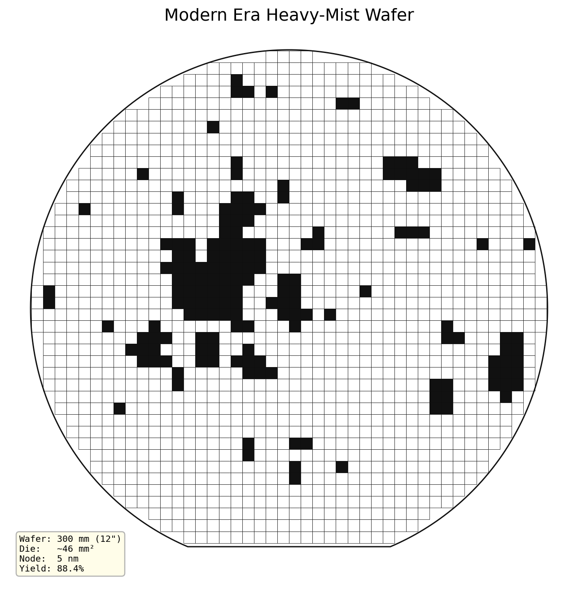

Four manufacturing eras. Each wafer shows die-level survival under average vs. heavy-mist particulate regimes.
Each wafer is rendered as a grid of die cells. White = surviving die. Black = defect-killed die. The wafer flat at the bottom reflects the real orientation of pre-300mm wafers. Each map carries its actual geometry: wafer diameter, estimated die area, technology node, and a live yield estimate.
Two particulate regimes are shown side by side for every era: Average (normal operating conditions, defects seeded from a calm RVH state) and Heavy-Mist (elevated particulate fallout, defects seeded from a storm RVH state with clustering).
The progression from left to right shows what 40 years of Moore's Law looks like on a wafer: more dies, smaller pitch, higher die count — and a shifting relationship between defect density and yield.

The modern 300 mm wafer under both regimes — a direct visual of how elevated particulate fallout shifts the failure pattern from isolated defects to spatially correlated clusters.



The 1987 wafer carries relatively few, large dies on a small substrate. Each die is a large target — the Murphy–Poisson penalty for die area is severe. Particle defects from early photolithography tools are clustered spatially, which actually helps: a single contamination event tends to kill one region rather than spreading losses uniformly across the wafer.


By 1995 the industry has moved to 200 mm substrates and sub-micron geometries. Die area is roughly halved versus 1987, which dramatically improves yield per die — but the wafer now holds far more dies, making total throughput sensitive to any spatially correlated defect event. Heavy-mist conditions show the first clear clustering signature across adjacent die rows.


The jump to 300 mm in the mid-2000s is the single largest step-change in wafer economics. Die count per wafer roughly doubles at equivalent die size. At 90 nm geometries, random particle sizes now approach critical feature dimensions — defect sensitivity rises sharply, and the heavy-mist scenario begins to look qualitatively different from the average case.


The modern node packs the highest die count of any era shown. At 5 nm, yield is dominated not by random particle contamination but by systematic defects, lithography overlay, and EUV stochastic effects — none of which are modeled here. What is modeled is the aggregate defectivity envelope under RVH dynamics. The average regime achieves high yield; heavy-mist conditions produce spatially clustered failure bands that are the visual signature of an excursion event in a rough-volatility process.
Rises dramatically across eras. 1987: ~180 die. Modern: ~1,500+ die. More dies per wafer amplifies both the benefit of high yield and the cost of a bad excursion.
Die area shrinks but complexity grows. Yield per die in the average regime stays high. The gap between average and heavy-mist regimes widens in absolute die-count terms as wafers get larger.
Heavy-mist patterns shift from scattered point defects in 1987 to spatially correlated cluster bands in modern nodes — the visual fingerprint of memory and roughness in the defectivity path.